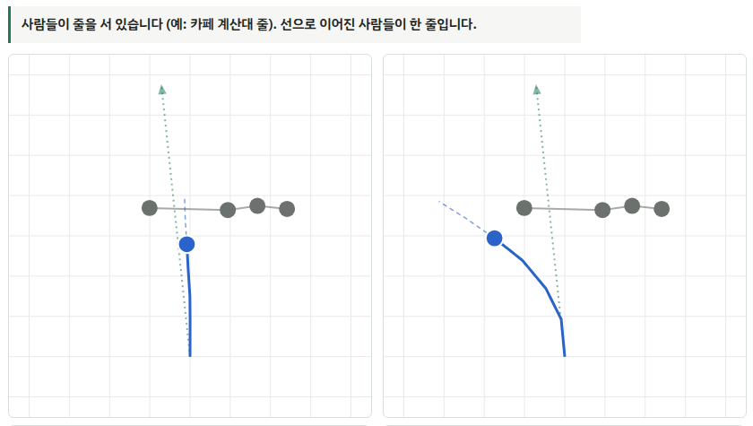

실제 사람 파일럿 (v2, 60문항, 약 13분)
실제 GC 장면 44개 + 일부러 만든 사회적 장면 16개

줄 서기: 틈으로 가로지르기 vs 줄 끝으로 돌아가기

대화 무리: 바깥으로 돌기 vs 무리 사이로 지나가기
NuRI LAB 랩미팅 · 2026. 11. 18
군중 속 로봇이 “내가 원하는 방식”으로 지나가게 하기
[발표자 이름] · 11/25 OpenReview 제출 준비
문제
양보
조심스러운 로봇을 원하는 사람, 흐름을 끊지 않는 로봇을 원하는 사람
지나가는 위치
앞을 가로지르는 것을 싫어하는 사람, 짧게 지나가길 원하는 사람
우회 폭
여유 공간을 중시하는 사람, 효율을 중시하는 사람
기존 군중 주행 정책은 고정된 하나의 “사회적 규범”을 최적화한다. 목표: A/B 질문 몇 개로 그 사람의 선호를 알아내고, 실행 시 경로 선택에 반영한다.
지난 미팅 이후 정한 방향
| 항목 | 이전 | 지금 |
|---|---|---|
| 안전 | 선호 모델의 특징 중 하나 | 후보를 거르는 필터 (사람과 최소 거리, 진행) |
| 선호 특징 | 안전·효율 섞인 6개 | 방향성 없는 스타일 5개: 지나가는 쪽, 앞/뒤, 양보, 우회 폭, 사람다움 |
| 경로 후보 | 사전학습 정책 샘플 | 사람 궤적으로 학습한 VQ-VAE 코드북 16개 |
| 평가 | 후회(regret) | 남겨 둔 장면에서 A/B 선택 일치율 |
안전을 선호에서 빼면 “누구나 원하는 것”과 “사람마다 다른 것”이 분리되어, 질문이 스타일에만 쓰인다.
방법
1
VQ-VAE 16코드, 4.8초 경로 (등속 대비 편차)
2
사람과 ≥ 0.5 m, 진행 ≥ 최고의 0.5배, 안전 후보 ≥ 4개
3
쪽, 앞/뒤, 양보, 우회, 사람다움 (코드 prior)
4
베이지안 Bradley–Terry, EUBO로 다음 질문 선택
5
안전 후보 중 θ̂·φ 최대 경로
선호 모델
P(A ≻ B) = σ(θ·(φ(A) − φ(B))), 사전분포 N(0, I), 답할 때마다 라플라스 근사로 사후분포 갱신
질문 선택
EUBO: 두 보기 중 더 좋은 쪽의 기대 효용이 큰 쌍을 묻는다. 비교: 무작위, Active Query, prior만, 평균 θ
후보를 코드북에서 만드는 이유
| 후보 (2.4초 시점) | 좌우 끝점 퍼짐 | 쌍별 거리 | 양쪽으로 갈림 | 앞/뒤 갈림 |
|---|---|---|---|---|
| Crowd-FM v3 (다듬은 샘플) | 0.11 m | 0.13 m | 5% | 6% |
| Crowd-FM (원래 샘플) | 0.12 m | 0.22 m | 5% | 9% |
| Crowd-FM gcp | 0.13 m | 0.15 m | 6% | 8% |
| VQ-VAE 코드북 (16개) | 0.52 m | 0.63 m | 22% | 36% |
결론
물어볼 “서로 다른 스타일”이 있어야 질문이 의미가 있다. 코드북은 좌우 퍼짐이 약 4배 커서 후보 생성기로 쓴다.
주의 · 향후 과제
Crowd-FM 샘플링 설정(guidance 0.01, 20개)은 바꿔 보지 않았다. 고른 코드를 정책(PRIEST)으로 다듬는 구조는 향후 과제.
실험 설정
장면
충돌 예상 16,209개 (테스트 구간, 목적지 ≥ 12초)
장면
충돌 예상 590개 (목적지 ≥ 8초, 안전 후보 ≥ 4개)
충돌 장면이란
로봇 직진, 사람 등속일 때 8초 안에 1 m 이내
합성 사용자 200명
dense: θ ~ N(0, I), 모든 축을 조금씩
sparse: 한두 축만 크게 (Dirichlet 0.3)
답: P(A) = σ(5 · (u(A) − u(B)))
평가
질문 장면 10개에서 최대 20문항 → 처음 보는 테스트 장면 20개에서 A/B 선택 일치율
결과 (4개 설정 범위)
질문 0개 (데이터 prior만)
0.52–0.54
사람다운 경로만 고르면 개인 선호와 거의 우연 수준으로 맞는다
질문 5개 (EUBO)
0.81–0.84
처음 보는 장면에서의 A/B 선택 일치율
질문 20개 (EUBO)
0.88–0.92
추가 질문의 이득은 점점 줄어든다
설정: GC dense, GC sparse, ETH/UCY dense, ETH/UCY sparse. 사용자 200명 평균.
질문 선택 비교 (질문 5개, 괄호는 20개)
| 설정 | prior | 무작위 | AQ | EUBO | −무작위 | −AQ |
|---|---|---|---|---|---|---|
| GC dense | 0.535 | 0.789 (0.902) | 0.816 (0.898) | 0.828 (0.911) | +0.039* | +0.012 n.s. |
| GC sparse | 0.522 | 0.760 (0.874) | 0.793 (0.876) | 0.809 (0.892) | +0.049* | +0.016* |
| ETH/UCY dense | 0.536 | 0.816 (0.903) | 0.824 (0.908) | 0.842 (0.920) | +0.026* | +0.019* |
| ETH/UCY sparse | 0.527 | 0.780 (0.872) | 0.801 (0.885) | 0.824 (0.881) | +0.044* | +0.023* |
* 사용자 단위 짝지은 부트스트랩 95% 구간이 0을 포함하지 않음. n.s. = 유의하지 않음 (GC dense EUBO−AQ: [−0.002, +0.028]). 20문항에서는 방법 간 차이가 줄어든다.
결과가 설정 선택에 좌우되는지 점검
질문 장면 풀
GC에서 질문을 뽑는 장면을 바꿔도 차이 없음. 36개 비교 중 4개만 유의했고, 모두 비충돌·전체 쪽이 약간 높음 (예: EUBO dense 5문항 +0.02).
ETH/UCY 목적지 기준
장면 수 281개 → 590개. 일치율은 ±0.01 이내로 같다. 본문은 8초, 12초는 부록.
코드 prior 입력
ETH/UCY에서 NLL 2.034 (자기 정보만) vs 2.044 (주변 사람 추가). 사람 정보는 prior에 도움이 되지 않았다.
ETH/Hotel 단일 데이터셋 제외(leave-one-out) 실험은 하지 않았다. 두 데이터셋을 합쳐도 장면의 3%다.
실제 사람 파일럿 (v2, 60문항, 약 13분)

줄 서기: 틈으로 가로지르기 vs 줄 끝으로 돌아가기
대화 무리: 바깥으로 돌기 vs 무리 사이로 지나가기
파일럿 설계와 분석
문항 60개
GC 44개: 5개 축 × 8 + 반복 4
새 장면 16개: 줄 서기, 대화 무리, 일행, 느린 보행자 × 4
모든 보기는 사람과 ≥ 0.8 m
파일럿 전용 특징 group: 무리 사이 통과
분석: 학습 42문항 → 테스트 14문항
personal: 본인 답으로 추정한 θ
shared: 다른 참가자들의 공통 θ
prior: 사람다운 경로만 고르기
반복 일관성: 예측의 상한
claude.ai 페이지 또는 로그인 없는 오프라인 HTML로 진행. 참가자 코드만 기록. 논문에 싣기 전 JBNU IRB 심의 면제 확인 필요 (연구 책임자: 교수님).
OpenReview 제출용 초록 (약 190단어)
Learning Individual Walking-Style Preferences for Crowd Navigation from a Few Pairwise Queries
People differ in how they want a robot to move through a crowd: some prefer it to yield early, others to keep pace; some want it to pass behind them, others in front. Existing crowd-navigation policies optimize a fixed notion of social compliance and cannot adapt to such individual preferences. We present a framework that identifies a user’s walking-style preference from a handful of pairwise (A/B) queries and uses it to select the robot’s path at test time. A VQ-VAE trained on human pedestrian trajectories provides a codebook of walking behaviours that generates style-diverse, human-like candidate paths. Unsafe candidates are filtered out, and each remaining candidate is described by interpretable style features: passing side, passing in front or behind, yielding, detour width, and human-likeness. A Bayesian Bradley–Terry model over these features is updated after each answer, and queries are chosen by the expected utility of the best option (EUBO). On held-out situations from Grand Central and ETH/UCY with simulated users, the human-data prior alone agrees with a user’s pairwise preferences only at chance level (0.52–0.54). Five queries raise agreement to 0.81–0.84, and twenty to 0.88–0.92. With five queries, EUBO significantly outperforms random queries in all four settings and an active-query baseline in three of four.
한계와 대응
| 한계 | 심각도 | 대응 |
|---|---|---|
| 합성 사용자 (실제 선호 미검증) | 큼 | 파일럿 v2 (IRB 확인 후 수집) |
| 개루프 평가 (실행 중 재계획 없음) | 중간 | 2D 재계획 폐루프 (1–2일), Gazebo는 향후 |
| 4.8초 코드북: 돌아가기 = 큰 우회 | 중간 | group·detour가 섞임을 명시, 정책으로 다듬기는 향후 |
| 선형 선호 모델 | 작음 | 해석 가능성으로 정당화 |
| 안전 거리: 벤치마크 0.5 m, 파일럿 0.8 m | 작음 | 0.8 m로 벤치마크 재실행 가능 |
오늘 결정이 필요한 것
1
정책 샘플은 다양성이 약 4배 작다. 정책 샘플링 설정을 더 바꿔 볼지도 함께.
2
2D는 1–2일, Gazebo는 제출 전 어려움.
3
면제 확인 후 8–10명 수집, 결과는 반박 기간이나 수정본에 추가.
4
파일럿과 기준을 맞출지.